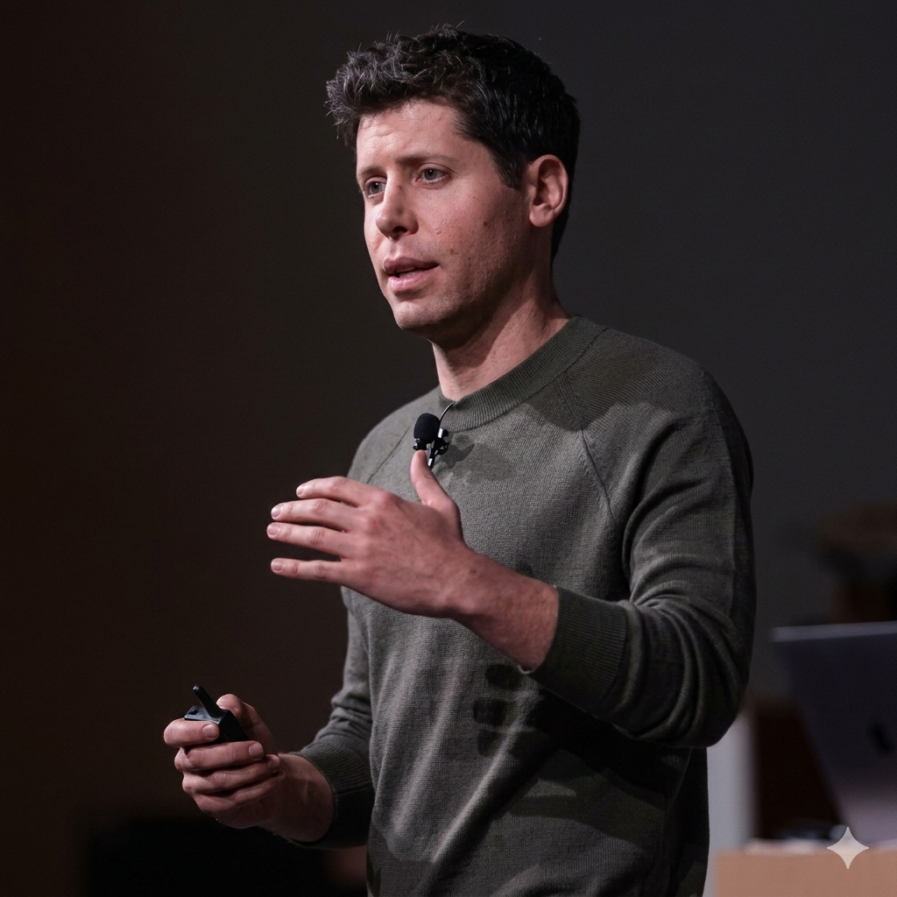
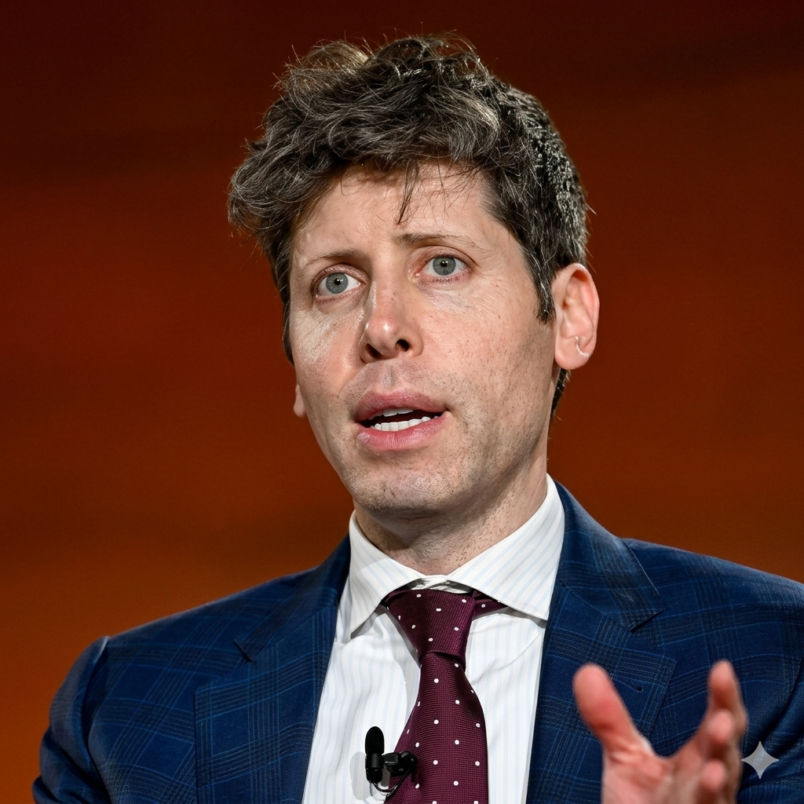

Sam Altman (nacido el 22 de abril de 1985)
es un empresario e inversor estadounidense, reconocido principalmente como el CEO de OpenAI, la empresa desarrolladora de ChatGPT.
Fue presidente de la aceleradora de startups Y Combinator y es considerado una figura clave en el avance de la inteligencia artificial moderna.

Sam Altman no construyó su fortuna a través de un solo éxito masivo, sino mediante una combinación estratégica de emprendimiento temprano e inversiones astutas en el ecosistema tecnológico.
Su primer gran movimiento fue la venta de Loopt, una aplicación de redes sociales basada en la ubicación, por unos 43 millones de dólares en 2012.